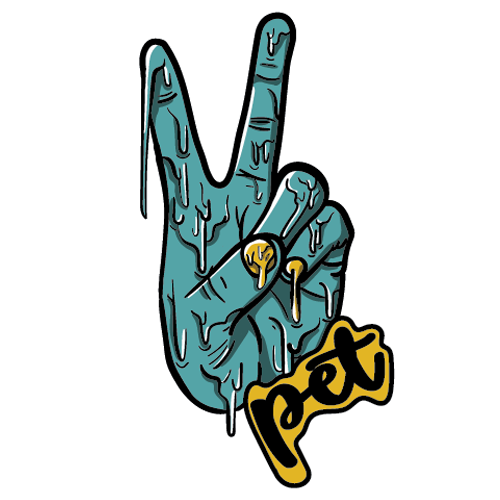
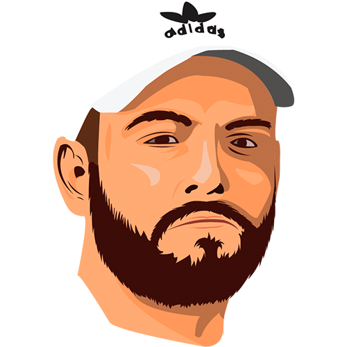
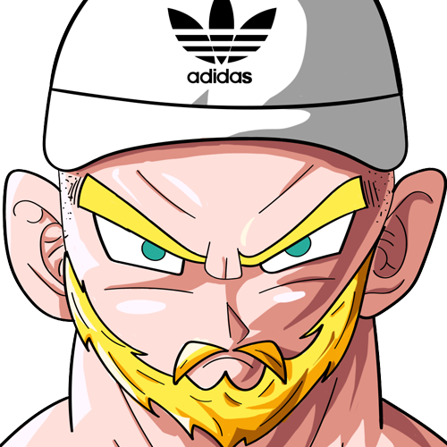
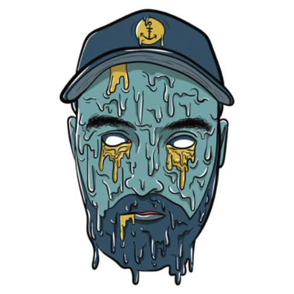
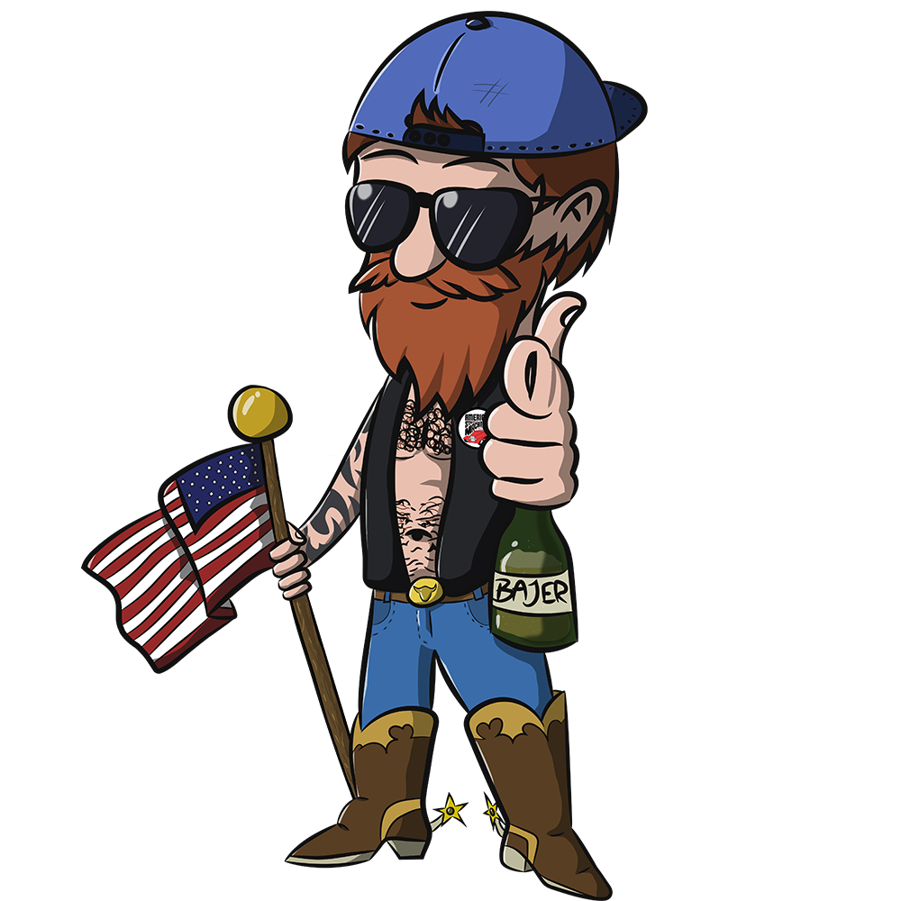
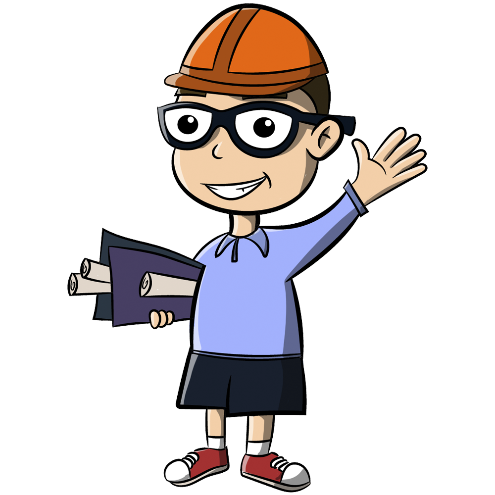
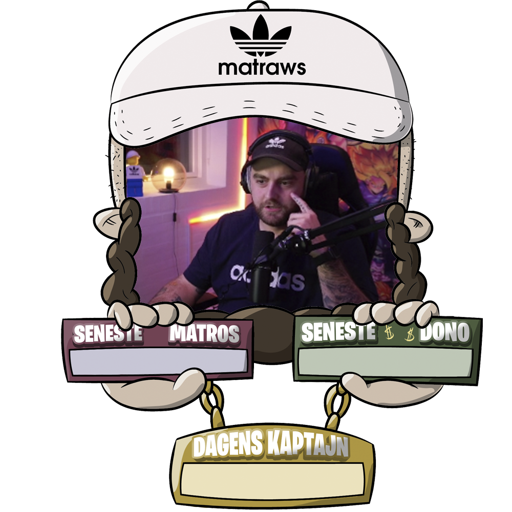

illustrationer.
Her har jeg samlet en håndfuld af de illustrationer, jeg har lavet det sidste års tid.

illustration til merchandise.
Denne illustration lavede jeg i samarbejde med mine seere på Twitch. Jeg skulle udgive merchandise i form af hoodies og t-shirts, og i den anledning gav det god mening, at seerne var med til at bestemme, hvordan det skulle se ud. Det er naturligvis mig selv, der har ført stregen.

selvportræt.
Dette selvportræt er lavet i forbindelse med en Illustrator Workshop, hvor vi blev undervist i at bruge "Pen Tool".

selvportræt - dragon ball.
Jeg er kæmpe "Dragon Ball"-fan, så et selvportræt i denne stil har jeg lavet gentagende gange i løbet af livet, dette er blot det seneste.

selvportræt til merchandise.
Dette selvportræt er - ligesom "peace"-hånden - lavet i forbindelse med udgivelsen af mit merchandise. Den er blevet printet på både hoodies og t-shirts.

karakterdesign til biltræf.
Sidste år blev jeg hyret til at skabe en illustreret maskot til et biltræf med fokus på amerikanske veteranbiler. Jeg kom frem til karakteren, "Jimi", som er en fusion af et amerikansk "Hillbilly"-look og et nordisk "vikinge"-look.

karakterdesign til økolariet.
I forbindelse med et af multimediestudiets projektforløb skulle vi udarbejde en interaktiv installation hos Økolaret - som er et oplevelsecenter i Vejle. Min gruppe og jeg producerede en prototype af et virtuelt spil. Til det spil skabte jeg denne karakter, som skulle bruges til at guide spilleren igennem spillet og dets regler.
